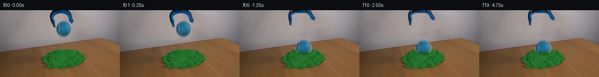

![首帧]()

Round 00
2026-11-04T20:22:50.378414+00:00像素候选变化代码 +263/−0inspection 更新
pixels a55d0c3e4347f825 · code df01584c506258de
查看本轮 generate.py 真实 diff
--- previous/generate.py
+++ current/generate.py
@@ -0,0 +1,263 @@
+"""Deterministic source-pixel continuation; no models, render engines or image viewing."""
+from pathlib import Path
+import json
+import math
+import numpy as np
+from PIL import Image, ImageDraw
+import cv2
+from scipy.ndimage import gaussian_filter, binary_dilation, binary_closing
+from artifact_io import save
+
+ROOT = Path(__file__).resolve().parent
+A = np.asarray(Image.open(ROOT / 'first_frame.png').convert('RGB'), dtype=np.float32)
+H, W = A.shape[:2]
+Y, X = np.mgrid[:H, :W].astype(np.float32)
+CX, CY = 136.0, 40.0
+RNG = np.random.default_rng(16)
+
+# Matting regions come from numerical color inspection of the input.
+blue_or_dark = ((A[..., 2] > A[..., 0] + 12) & (A[..., 0] < 143)) | (A.max(2) < 105)
+tool_zone = (X >= 104) & (X <= 159) & (Y <= 37)
+tool_zone &= ((Y <= 21) | (X <= 119) | ((X >= 148) & (Y <= 28)))
+tool_core = blue_or_dark & tool_zone
+tool_core = binary_closing(tool_core, iterations=1, border_value=1) & tool_zone
+tool_support = binary_dilation(tool_core, iterations=1) & (Y <= 38)
+ball_distance = np.sqrt(((X-CX)/16.4)**2 + ((Y-CY)/16.5)**2)
+ball_support = (ball_distance < 1.24) & ~binary_dilation(tool_core, iterations=1)
+remove = binary_dilation(tool_core, iterations=2) | (ball_distance < 1.28)
+# Navier–Stokes image inpainting is a local numerical pixel operation.
+clean = cv2.inpaint(A.astype(np.uint8), remove.astype(np.uint8)*255, 5, cv2.INPAINT_NS).astype(np.float32)
+
+# Premultiplied residual sprites retain the original seams and photographic shading.
+# Core colors are copied from source; only silhouette edge alpha is estimated.
+ball_alpha = np.clip((1.15-ball_distance)/0.23, 0, 1)
+ball_alpha = gaussian_filter(ball_alpha, 0.35) * ball_support
+ball_residual = (A-clean) * ball_support[..., None]
+ball_residual[ball_alpha < 0.025] = 0
+ball_alpha[ball_alpha < 0.025] = 0
+# Pad and soften the jaw matte, while retaining the source edge pixels.
+tool_alpha = gaussian_filter(tool_support.astype(np.float32), 0.30)
+tool_alpha *= tool_support
+tool_residual = (A-clean) * tool_support[..., None]
+
+
+def sample(field, mx, my):
+ return cv2.remap(field.astype(np.float32), mx.astype(np.float32), my.astype(np.float32),
+ cv2.INTER_LINEAR, borderMode=cv2.BORDER_CONSTANT, borderValue=0)
+
+
+def apply_sprite(dest, residual, alpha, mx, my):
+ pa = sample(alpha, mx, my)
+ rr = sample(residual, mx, my)
+ bg = sample(clean, mx, my)
+ return dest + rr + pa[..., None] * (bg-dest)
+
+
+def jaw_layer(dest, angle):
+ # Opposite rotations around a top hinge separate the two curved jaws.
+ # A 6-pixel hinge band smoothly anchors the apparatus to the top edge.
+ pivot_x, pivot_y = 130.0, 3.0
+ for side in (-1, 1):
+ a = math.radians(side * angle)
+ # Inverse rotation maps the destination to the photographed original.
+ u, v = X-pivot_x, Y-pivot_y
+ mx = pivot_x + math.cos(a)*u + math.sin(a)*v
+ my = pivot_y - math.sin(a)*u + math.cos(a)*v
+ # Left jaw is x < 130; right jaw is x >= 130 in source coordinates.
+ part = (X < pivot_x) if side == -1 else (X >= pivot_x)
+ # Positive rotation of the left lower arm moves it left (image y is down).
+ # side=-1 above is corrected by reversing its angle below.
+ a = -a
+ mx = pivot_x + math.cos(a)*u + math.sin(a)*v
+ my = pivot_y - math.sin(a)*u + math.cos(a)*v
+ dest = apply_sprite(dest, tool_residual*part[..., None], tool_alpha*part, mx, my)
+ # Preserve a thin top connection and blend gradually into the opening arms.
+ anchor = np.clip((6-Y)/4, 0, 1) * tool_support
+ dest = dest*(1-anchor[..., None]) + A*anchor[..., None]
+ return dest
+
+# Persistent, small rearrangement of the existing mound. Dense displacement
+# is confined to the impact neighborhood; no new sand pile is synthesized.
+DX = X-CX
+DY = Y-94.0
+rad = np.sqrt((DX/28.0)**2 + (DY/18.0)**2)
+zone = np.clip((1.65-rad)/0.30, 0, 1)
+zone *= (Y >= 78) & (Y <= 124) & (X >= 94) & (X <= 178)
+green = (A[..., 1] > A[..., 0]*1.25) & (A[..., 1] > A[..., 2]*1.25)
+# A source-derived texture strip for the front lip is sampled well within green sand.
… diff truncated; 176 more lines …